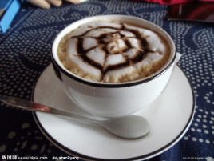

来杯咖啡吗

| 咖啡 | 价格 |
|---|---|
| 拿铁 | 24 |
| 美式咖啡 | 24 |
| 卡布奇诺 | 27 |
| 焦糖玛奇朵 | 24 |
拿铁
拿铁咖啡是意大利浓缩咖啡(Espresso)与牛奶的经典混合，意大利人也很喜欢把拿铁作为早餐的饮料。意大利人早晨的厨房里，照得到阳光的炉子上通常会同时煮着咖啡和牛奶。喝拿铁的意大利人，与其说他们喜欢意大利浓缩咖啡，不如说他们喜欢牛奶，也只有Espresso才能给普普通通的牛奶带来让人难以忘怀的味道。
美式咖啡
美式咖啡（英文：Americano，意大利语：Caffè Americano）咖啡的一种，是最普通的咖啡。是使用滴滤式咖啡壶所制作出的黑咖啡，又或者是意式浓缩中加入大量的水制成。美式咖啡口味比较淡。因为一般的萃取时间相对较长（大概四五分钟），所以咖啡因含量较高。
卡布奇诺
卡布奇诺是一种加入以同量的意大利特浓咖啡和蒸汽泡沫牛奶相混合的意大利咖啡。此时咖啡的颜色，就像卡布奇诺教会的修士在深褐色的外衣上覆上一条头巾一样，咖啡因此得名。传统的卡布奇诺咖啡是三分之一浓缩咖啡，三分之一蒸汽牛奶和三分之一泡沫牛奶，并在上面撒上小颗粒的肉桂粉末。
焦糖玛奇朵

焦糖玛奇朵（英文：Caramel Macchiato）是在香浓热牛奶上加入浓缩咖啡、香草，再淋上纯正焦糖而制成的饮品，融合三种不同口味。Macchiato意大利文，意思是“烙印”和“印染”，中文音译“玛奇朵”。“Caramel”意思是焦糖。焦糖玛琪朵，寓意“甜蜜的印记”。
本页为练习©薛沐凡